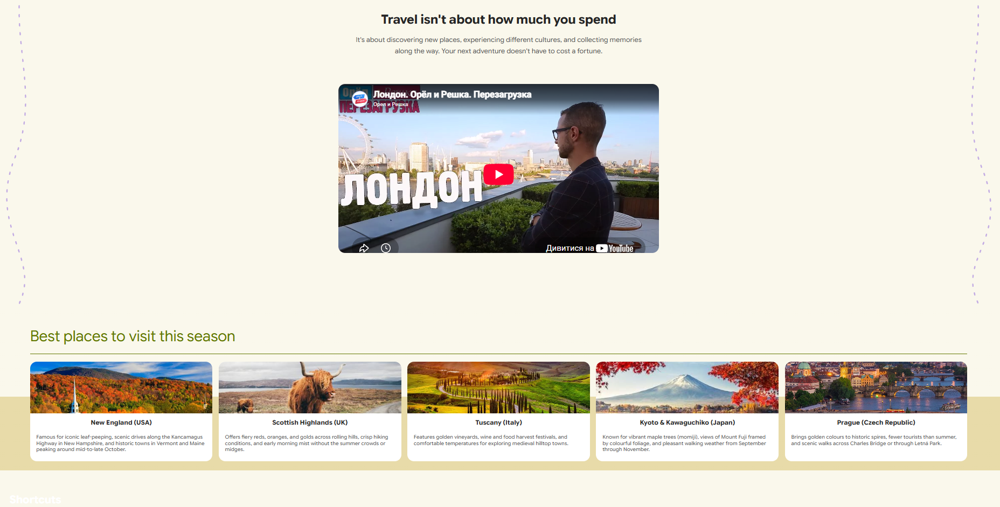

Travelling the world on a budget
From an initial sketch to a collaborative website.
This project began with a relatively simple idea: making travelling more accessible to people with limited budgets. Working as part of a university team, we developed a website combining travel recommendations, useful resources and personal experiences.
It was also my first experience of developing a larger website collaboratively, where my individual design decisions had to work alongside those of other developers.
Behind the Project
Development journal
A closer look at the work behind the finished website.
01. My individual contribution
My main responsibility was developing the homepage, starting with its visual structure and gradually introducing interactive elements. These included an image gallery, navigation, video integration and a search feature.
I wanted the website to be visually engaging without making navigation unnecessarily complicated. Particular attention was given to its appearance on smaller screens and the consistency of its design.
02. Technical challenges and solutions
One of the most challenging stages was combining independently developed pages into a single website. Although each page worked separately, merging them introduced conflicting CSS rules, incorrect file paths and unexpected changes to the layout.
Resolving these problems required reviewing the structure of our files, correcting references and testing individual components rather than attempting to fix everything simultaneously.
03. What I learned
This project helped me understand the difference between writing code that works independently and developing code that becomes part of a larger system.
I also gained practical experience with GitHub, version control, responsive design and debugging. Most importantly, I became more confident in identifying the causes of problems rather than simply looking for immediate solutions.